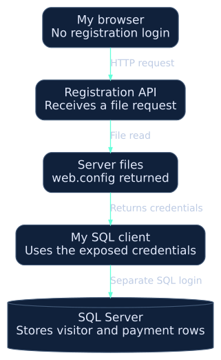
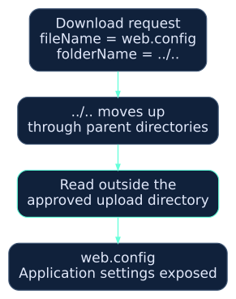
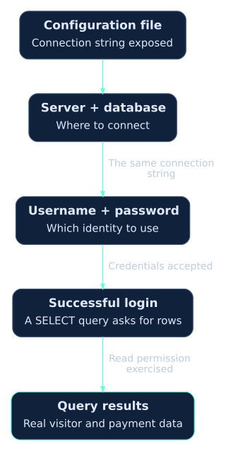
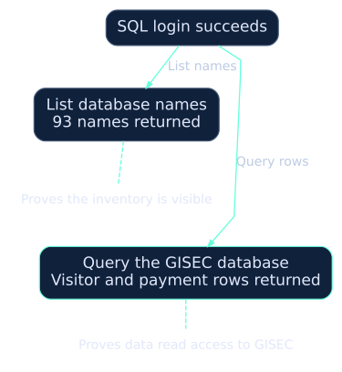

I was getting ready to speak at GISEC. About two weeks before the event, I started looking at its registration platform and ended up with access to the database behind it.
What started with an image-upload feature led to the application's configuration file, working database credentials, and real visitor and payment records. This is how I got from one to the other.
A quick map of what I was looking at
There were several pieces involved, and each had a different job. The registration page was what a visitor saw in their browser. An API was the server-side service that the page sent requests to, such as uploading an image or downloading a file. The server's files held application settings, while a separate database held registration records.
The investigation moved through those pieces in this order:

The concepts that explain the chain
A file path tells the server where to look
A filename identifies a file, and a folder tells the server where to find it. A download feature should limit that search to an approved directory, such as its image-upload folder.
The special path segment ../ means “go up one parent directory.” If an application accepts that instruction from a visitor and lets it reach outside the approved folder, the visitor may be able to request other files the application can read. That is path traversal.
A configuration file can hold the application's credentials
web.config is a configuration file used by applications in the ASP.NET/IIS web stack. Here it contained settings for connecting to other services, including a database connection string: the server address, database name, username, and password needed to attempt a database connection.
Reading that string and using it successfully are separate findings. An exposed password could be old, incorrect, or valid only on an unreachable server. I needed to test the next step before describing the impact.
A database login and a data read are different checks
SQL Server is Microsoft's database software. A database stores information in tables; a table has columns, such as an email field, and rows, such as one person's registration record.
A successful login establishes that the credentials work. A query then asks the database to do something. A SELECT query asks for information, and the account's permissions determine what it can read. Getting actual rows back is what establishes access to the data.
Following the registration frontend
I began by looking through the frontend and the API calls it made. Several API routes returned 401, meaning a valid login was required. A token is the credential an application sends to identify an authenticated session. Following the file-handling code took me to an image-upload route with a parameter called folderName.
I tried uploading a text file first. The handler rejected it with “Invalid file type.” A small PNG image went through, so the upload feature was checking the file type. That check controlled what could be uploaded. I still needed to look separately at what the download feature could return.
The more interesting part was how the application retrieved that image. There was a separate route, /Upload/File, which accepted both fileName and folderName. Give it the uploaded image's name and folder, and it returned the image bytes. That request worked without authentication.
Now I had a file-reading endpoint where the client supplied the folder as well as the filename. I started checking whether the folder was actually restricted to the upload directory.
Getting outside the upload folder
My first attempts did not return anything useful. Different filenames, path separators, and an encoded path produced 403 or 404 responses. Those codes mean access was refused or the requested resource was not found; neither response established a file read.
The request that worked kept the filename simple and put the traversal in the folder parameter:
GET /Upload/File?fileName=web.config&folderName=../.. HTTP/1.1
Host: gisecapi.gisec.aeHere, GET is the request to retrieve a resource, and Host identifies the API server. fileName=web.config chooses the file. folderName=../.. asks the server to move up two parent directories before looking for it.

That returned HTTP 200 and 29,887 bytes.
A successful status code was worth investigating, but I still needed to check the response body. It could have been a generic error page. Instead, it was XML containing the application's configuration, connection details, and settings.
The file was the production web.config.
This confirmed the path traversal: the supplied folder had taken the read outside the upload area, and the application had returned the configuration file from that location.
I had not needed a login to make the request. The authentication checks on other API routes had not protected this one.
The configuration had the next step in it
A configuration file can contain everything an application needs to connect to its other services. In this case, that included the SQL Server address, database name, username, and password.
The other exposed settings showed which services the registration application connected to:
- JWT signing secret: a secret used to sign the application's authentication tokens.
- Stripe, Tap, and DWTC payment keys: credentials for payment-service integrations.
- SMTP credentials: the account details used to send registration email.
- Google and LinkedIn OAuth client secrets: credentials identifying the application in those sign-in integrations.
So the file read had exposed more than application settings. It had exposed credentials the application used elsewhere. I needed to establish which of those credentials actually worked.
There was an older, commented-out database connection string in the file. That login failed. The active connection string was the important one.
I also checked the exposed API keys separately, and they worked. One detail matters here: the saved Stripe and Tap keys had test-mode prefixes. They were exposed by the production application, but they were test-environment payment credentials.
From a file read to a SQL login
The SQL Server was reachable over the internet. I used the credentials from the active connection string and authenticated successfully. The server identified itself as SQL Server 2022.
At this point, I had crossed from the registration API into its database backend. There was no password guessing involved. The application had supplied the credentials through the file-download bug.

I started by inspecting the schema, the database's structure: which tables existed, which columns they contained, and what I could query. The GISEC database had tables covering users, bookings, orders, payments, payment transactions, and exhibitor invitations.
One of my early queries failed because I had asked for a column called Name. The user table actually had FirstName and LastName. After checking the columns and correcting the query, I got rows back.
Those rows contained names, email addresses, phone numbers, companies, job titles, and countries. A query against the Payments table also returned names and email addresses alongside transaction amounts and payment statuses. These were records of transactions, not evidence that I could make or change a payment.
These were real registration and transaction records. The database name ended in _dev, but the contents were not dummy data.
What the recorded run showed
The proof of concept recorded the following table counts:
User rows 21,118
Order rows 28,276
Payments rows 620It also returned a 100-record visitor sample. That is the personal data obscured in the lower part of the recording below. The counts changed between runs as the platform continued receiving registrations.
The server had 93 databases
Listing the databases returned 93 names. They included databases associated with GISEC, GITEX, World Government Summit, ADSW, and other events across the DWTC/Evento infrastructure.
I had started at a registration endpoint for one event and reached a server shared by a much larger event platform.
The distinction in the evidence is that I enumerated 93 database names; the row reads and samples shown here are from GISEC. The inventory alone does not establish that I read records from all 93 databases.
It helps to separate those two kinds of database query. An inventory says which databases are visible to the login. Reading rows shows what information the login can actually retrieve from a particular database.

Putting the report together
I packaged the steps into poc.py. A proof of concept is a small demonstration of an issue; this one let the team reproduce the chain without piecing together my individual requests.
The script had separate options for retrieving the configuration, parsing the database credentials, checking the SQL login, reading a visitor sample, and listing the exposed configuration entries. The instructions in my original report included:
# Retrieve the configuration
python3 poc.py --lfi
# Retrieve it, parse the credentials, and check the SQL login
python3 poc.py --lfi --db
# Include the 100-record visitor sample
python3 poc.py --lfi --db --dump
# List the exposed configuration entries
python3 poc.py --keysThese are the commands from the private report; the script and the unredacted output are not included in this post. The two redacted recordings show the configuration response and the database verification.
Reporting it before taking the stage
I emailed GISEC on August 31, 2026, explained the file read and database access, and attached the proof of concept with reproduction instructions.
My recommendations covered the whole chain: rotate the exposed passwords and keys, fix the path handling and access controls on the file endpoint, limit the SQL account's permissions, and restrict internet access to the database port.
That last part of the report mattered because closing the file-download route would not invalidate credentials that had already been exposed. The secrets needed attention too. Rotating a secret means replacing it and invalidating the exposed value, so a copied password or key can no longer be used.
The GISEC team was very thankful that I brought the issue to their attention. They acted immediately and subsequently confirmed that it was fixed. I really appreciated the response.
Looking back
I had a wonderful time speaking at GISEC and meeting people there. Reporting a vulnerability in the event's own registration platform two weeks beforehand was an unexpected part of preparing for the talk.
The part that stayed with me was how each step made the previous one more serious. An image-download feature became a configuration leak. The leaked credentials worked. The database contained real people and real transactions. Following that chain, and giving the team enough evidence to fix it, was what made the report useful.
More research: How I Found a Critical JEE Advanced 2026 Data Exposure